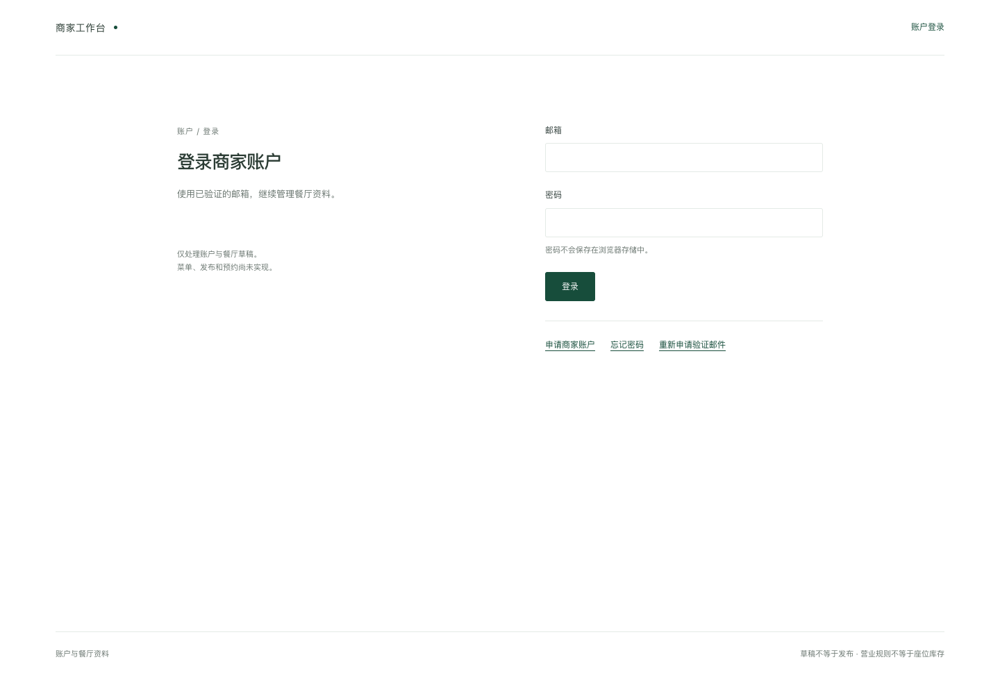
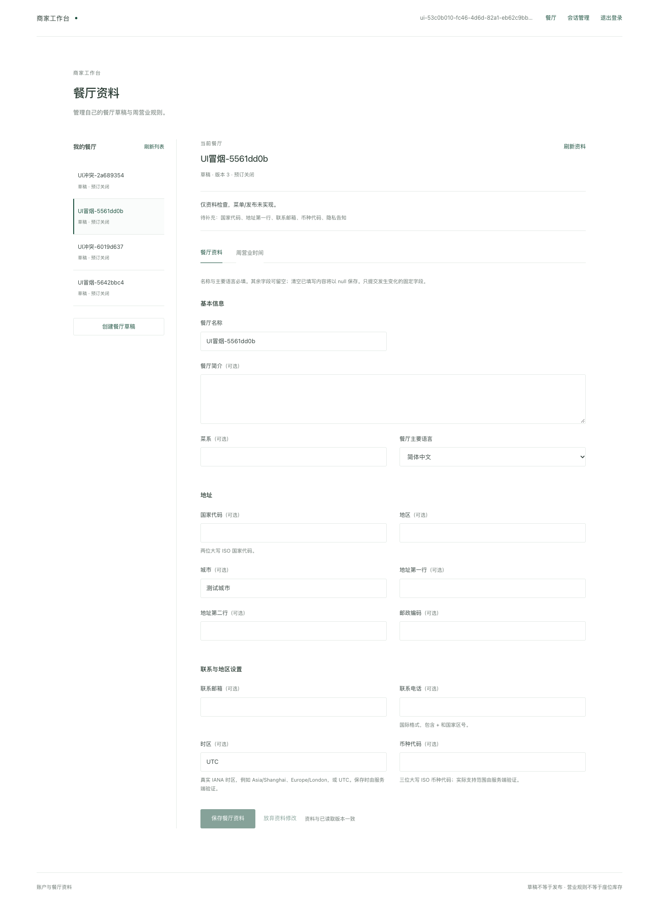
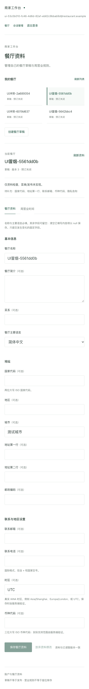

实施验收 · 2026-11-14 · 第一业务闭环
商家账户与餐厅管理已接通真实数据库
已从“接口契约”进入实际工程：注册、令牌验证、登录、退出、重置密码、创建餐厅、修改资料和周营业时间具备真实后端及页面。当前完成的是本地真实闭环，不是完整平台上线，也不代表邮件送达或全部生产门禁已通过。
26 / 26后端测试通过7 / 7浏览器测试通过10恢复核对实体0运行依赖已知漏洞
01 · 实际落地内容
| 模块 | 已实现 | 范围 |
|---|---|---|
| 前后端工程 | React + Vite + TypeScript；Fastify + TypeScript；分别有依赖锁和构建入口。 | 源码分属frontend/与backend/，同一Git仓库。 |
| 真实数据库 | 独立PostgreSQL 16开发库与测试库；迁移角色与应用角色分离；SCRAM认证、SQL约束、迁移摘要与锁。 | 应用拒绝超级用户、建库/建角色/DDL与表所有者权限，不连接其他项目数据库。 |
| 认证 | 邮箱注册、验证令牌、登录、会话查询、当前/全设备退出、找回与重置密码。 | Argon2id、Cookie摘要、CSRF/Origin校验、到期与撤销；无模拟登录。 |
| 餐厅管理 | 创建草稿、归属、分页列表、固定资料编辑、周营业时间与跨午夜处理。 | 创建幂等；If-Match共享revision；先鉴权归属再版本检查。 |
| 通知基础 | 真实outbox、短期加密动作材料、SMTP worker、租约与不确定送达处理。 | 没有SMTP配置只排队；未验证邮件实际送达，accepted也不等于delivered。 |
| 运维基础 | 健康检查、安全响应头、限流、日志脱敏、CI配置、备份恢复检查。 | 正式告警、域名、线上反向代理和云端恢复仍待验收。 |
02 · 验收证据与限制
| 检查 | 结果 | 具体覆盖 |
|---|---|---|
| TypeScript与构建 | 通过 | 前后端严格类型检查，后端产出JavaScript、前端产出静态构建。 |
| 后端测试 | 26通过 / 0失败 | 真实PostgreSQL；两个用户隔离、角色伪造、密码/令牌、幂等、并发ETag、周界营业、退出与改密撤销、事务回滚、数据库不可用。 |
| 浏览器测试 | 7通过 / 0失败 | 真实HTTPS页面和API；中性注册、令牌清URL且不自动消费、登录建店改资料、跨日营业、刷新/退出、两窗口冲突、390px移动布局。 |
| 备份恢复 | 通过 | pg_dump后恢复到新独立库，比较10类实体数量、餐厅ID/revision及成员归属；未破坏开发库。 |
| 真实重启 | 通过 | PostgreSQL实际重启后餐厅记录仍在；新连接/新应用读取也通过。 |
| 运行依赖审计 | 已知漏洞0 | 按本轮npm审计；邮件库已升级到10.5.0。不是对未知漏洞、供应链或未来版本的绝对保证。 |
| 静态契约 | 通过 | 17个操作、21个schema，检查引用、示例、白名单、格式和文档链接；不能替代实际服务验收。 |
| 真实邮件与生产环境 | 未完成 | SMTP、发送域名验证、退信/投诉、正式条款/隐私、正式证书与部署尚未提供或验收。 |
邮箱验证测试的边界：自动化测试通过正常注册接口建立实际账号，再在专用测试代码中读取短期加密动作材料，调用正常验证接口。不是直接修改“已验证”状态，也没有增加线上读令牌或绕过登录接口。但它没有经过真实邮箱收信，不能勾选SMTP送达验收。
03 · 修复的关键问题
- 业务事务内重新锁定用户和会话，防止“注销已完成、旧请求仍落库”的授权竞态。
- 先取得餐厅锁，再读取营业规则的新快照，避免新revision与旧营业内容混用。
- 创建幂等比较初始摘要，不以已经修改过的餐厅当前内容判断重试。
- 邮件动作链接与前端路由保持一致，优先使用片段令牌，页面立即清除URL并要求显式确认。
- 本地HTTPS Host校验兼容HTTP/2 :authority，不为修复页面访问而放宽主机白名单。
- 前后端依赖锁不含隔离机器或临时路径；node_modules、证书、数据与配置均不入库。
04 · 实际页面


查看390px移动端截图

05 · 入口与运行
工程说明、环境配置和完整检查命令见 README；逐项进度见 TODO。本地已配置时可分别启动：
npm --prefix backend run dev npm --prefix frontend run dev
本地地址为 https://localhost:5173，仅供当前机器联调；自签名开发证书不等于正式证书。未配置SMTP时普通新账号不能跳过邮箱验证，因此页面能打开不代表已可对真实商家开放。
06 · 后续未完成项
- 真实SMTP、正式发送身份、消息回执及完整邮箱注册/找回验收。
- 正式条款/隐私、线上数据库、HTTPS反向代理、告警和定期备份配置。
- 菜单/PDF/照片上传、菜单识别与商家确认。
- Agent引导、AI图片与HTML生成、预览隔离及正式发布/回滚。
- 顾客预订、顾客可选账号、邮件订阅和访问统计。
- 整个平台和上线餐厅产品的双层生产门禁；本轮不能将完整TODO全部勾为完成。